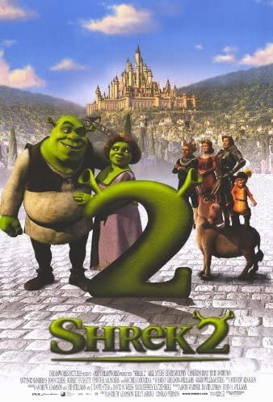
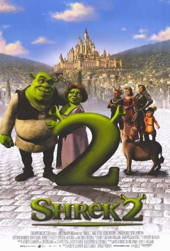

GENRE: Fantasy/Comedy | RUN TIME: 1hr 29minutes | RATING:
Once upon a time, in a far away swamp, there lived an ogre named Shrek (Mike Myers) whose precious solitude is suddenly shattered by an invasion of annoying fairy tale characters. They were all banished from their kingdom by the evil Lord Farquaad (John Lithgow). Determined to save their home -- not to mention his -- Shrek cuts a deal with Farquaad and sets out to rescue Princess Fiona (Cameron Diaz) to be Farquaad's bride. Rescuing the Princess may be small compared to her deep, dark secret.
GENRE: Fantasy/Comedy | RUN TIME: 1hr 30minutes | RATING:
After returning from their honeymoon and showing home movies to their friends, Shrek and Fiona learn that her parents have heard that she has married her true love and wish to invite him to their kingdom, called Far Far Away. The catch is: Fiona's parents are unaware of the curse that struck their daughter and have assumed she married Prince Charming, not a 700-pound ogre with horrible hygiene and a talking donkey pal.
GENRE: Fantasy/Comedy | RUN TIME: 1hr 33minutes | RATING:
When King Harold suddenly croaks, Shrek (Mike Myers) learns he will have to rule the land of Far, Far Away, unless he can find a suitable heir to the throne. The most-promising candidate is Princess Fiona's (Cameron Diaz) cousin Artie (Justin Timberlake), a teenage slacker in a medieval high-school. Shrek and his trusted companions, Donkey (Eddie Murphy) and Puss in Boots (Antonio Banderas), set out to bring Artie back but find their mission is a bigger challenge than they expected.